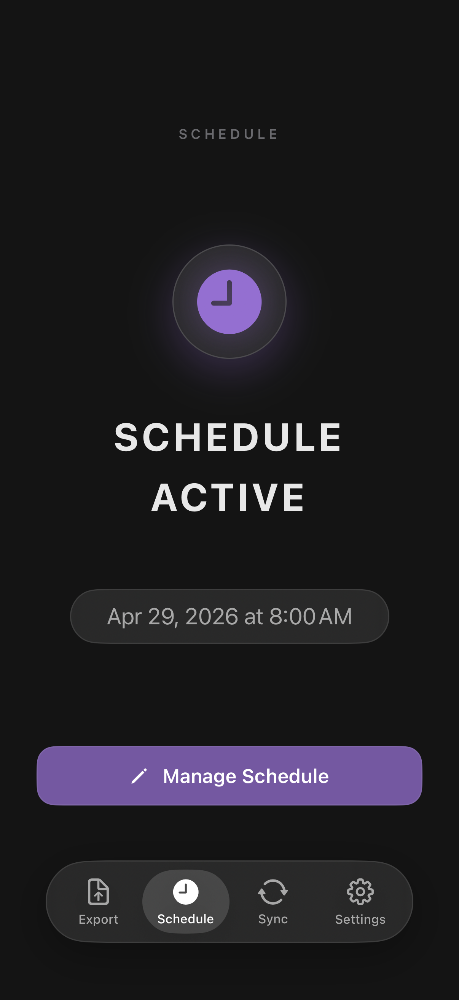
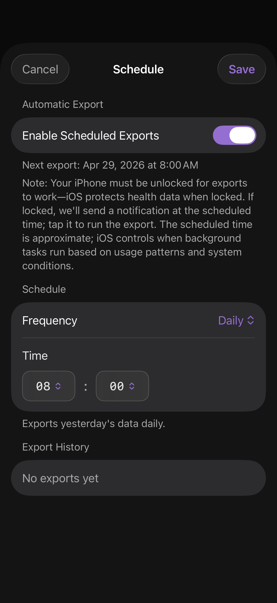

Scheduling
Run exports automatically — daily or weekly, at a time you pick. Uses iOS background tasks plus a scheduled local notification as a fallback when the device is locked.

The Schedule tab
A status screen, not a settings panel. It tells you in one glance:
- Whether the schedule is on or off
- The next scheduled run, if any
- The last run's outcome
One button — Set Up Schedule (or Manage Schedule) — opens the detail view.
Schedule settings

Export history
The list at the bottom of the Schedule screen records every scheduled run with its outcome. Tap a row to see details. Failed runs include a Retry button that re-runs that specific date range.
How iOS scheduling actually works
HealthKit data isn't readable while the device is locked. Scheduled exports run via BGAppRefreshTask, which iOS opportunistically schedules based on usage patterns — your time setting is a target, not a contract. As a fallback, the app posts a local notification at the scheduled time if the device is locked; tap it to run the export.
- The scheduled time is approximate. iOS may run the task earlier, later, or skip it if the device is dead/disconnected.
- Scheduled exports work best when your phone is regularly plugged in and unlocked at roughly the same time each day.
- If the export fails because the device was locked, tap the notification — that runs the export with HealthKit access.
Programmatic control
You can turn the schedule on/off from Shortcuts using the Turn Scheduled Export On or Off intent. See Shortcuts for examples.